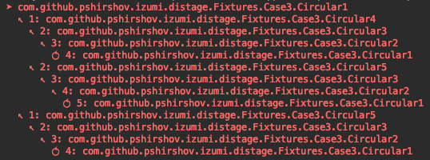

distage Staged Dependency Injection
distage is a pragmatic module system for Scala that combines safety and reliability of pure FP with late binding and flexibility of runtime dependency injection frameworks such as Guice.
Hello World
Let’s start with a simple Hello app:
import distage._
class Hello {
def hello(name: String) = println(s"Hello $name!")
}
object HelloModule extends ModuleDef {
make[Hello]
}
object Main extends App {
val injector: Injector = Injector()
val plan: OrderedPlan = injector.plan(HelloModule)
val classes: Locator = injector.produce(plan)
println("What's your name?")
val name = readLine()
classes.get[Hello].hello(name)
}
We’ll break it down line-by-line:
object HelloModule extends ModuleDef {
make[Hello]
}
Here we define a Module for our application. A module specifies what classes to instantiate and how to instantiate them.
By default, distage will just call the constructor.
If a class’s constructor requires arguments, distage will first instantiate the arguments, then call the constructor with its dependencies fulfilled. All classes in distage are instantiated exactly once, even if multiple different classes depend on them, i.e. they’re Singletons.
A module can be combined with another to produce a larger module via ++ and overridenBy operators. We can create a ByeModule and join it with our HelloModule:
object ByeModule extends ModuleDef {
make[Bye]
}
class Bye {
def bye(name: String) = println(s"Bye $name!")
}
val helloBye: Module = HelloModule ++ ByeModule
We can override the implementation of Hello class by overriding our HelloModule with an alternative implementation:
val uppercaseHello: Hello =
new Hello {
def hello(name: String) = s"HELLO ${name.toUpperCase}"
}
object UppercaseHelloModule extends ModuleDef {
make[Hello].from(uppercaseHello)
}
val uppercaseHelloBye: Module = helloBye overridenBy uppercaseHello
Combining modules with ++ is the main way to assemble your app together. For scenarios requiring extreme late-binding across multiple modules, you can use the Plugins mechanism to automatically discover modules from the classpath.
Whether you combine modules explicitly or through [Plugins], distage can check at compile-time if your app is wired correctly. If the modules typecheck, the app is guaranteed to start. See Static Configurations for more details.
Let’s go back to the code:
object Main extends App {
val injector: Injector = Injector()
val plan: OrderedPlan = injector.plan(HelloModule)
Here we create an instantation plan from the module definition. distage is staged, so instead of instantiating our definitions right away, distage first builds a pure representation of all the operations it will do and returns it back to us.
This allows us to easily implement additional functionality on top of distage without modifying the library. Features such as Plugins and Configurations are separate libraries, built on transforming modules and plans
val classes: Locator = injector.produce(plan)
println("What's your name?")
val name = readLine()
classes.get[Hello].hello(name)
Executing the plan yields us a Locator, that holds all the instantiated classes. This is where distage ends, and app’s main logic begins.
Given a Locator we can retrieve instances by type, call methods on them or summon them with a function:
import scala.util.Random
classes.run {
(hello: Hello, bye: Bye) =>
val names = Array("Snow", "Marisa", "Shelby")
val rnd = Random.nextInt(3)
hello(names(rnd))
bye(names(rnd))
}
classes.runOption {
i: Int => i + 10
}.fold(println("I thought I had Int!"))(println(_))
Multibindings / Set Bindings
Multibindings are useful for implementing event listeners, plugins, hooks, http routes, etc.
To define a multibinding use .many and .add methods in ModuleDef DSL:
import cats.effect._, org.http4s._, org.http4s.dsl.io._
import scala.concurrent.ExecutionContext.Implicits.global
import distage._
object HomeRouteModule extends ModuleDef {
many[HttpRoutes[IO]].add {
HttpRoutes.of[IO] {
case GET -> Root / "home" => Ok(s"Home page!")
}
}
}
Multibindings defined in different modules will be merged together into a single Set. You can summon a multibinding by type Set[_]:
import cats.implicits._, import org.http4s.server.blaze._, import org.http4s.implicits._
object BlogRouteModule extends ModuleDef {
many[HttpRoutes[IO]].add {
HttpRoutes.of[IO] {
case GET -> Root / "blog" / post => Ok("Blog post ``$post''!")
}
}
}
class HttpServer(routes: Set[HttpRoutes[IO]]) {
val router = routes.foldK
def serve = BlazeBuilder[IO]
.bindHttp(8080, "localhost")
.mountService(router, "/")
.start
}
val context = Injector().produce(HomeRouteModule ++ BlogRouteModule)
val server = context.get[HttpServer]
val testRouter = server.router.orNotFound
testRouter.run(Request[IO](uri = uri("/home"))).flatMap(_.as[String]).unsafeRunSync
// Home page!
testRouter.run(Request[IO](uri = uri("/blog/1"))).flatMap(_.as[String]).unsafeRunSync
// Blog post ``1''!
For further detail see Guice wiki on Multibindings.
Provider Bindings
To bind a function instead of constructor use .from method in ModuleDef DSL:
case class HostPort(host: String, port: Int)
class HttpServer(hostPort: HostPort)
trait HttpServerModule extends ModuleDef {
make[HttpServer].from {
hostPort: HostPort =>
val modifiedPort = hostPort.port + 1000
new HttpServer(hostPort.host, modifiedPort)
}
}
To inject named instances or config values, add annotations to lambda arguments’ types:
trait HostPortModule extends ModuleDef {
make[HostPort].from {
(configHost: String @ConfPath("http.host"), configPort: Int @ConfPath("http.port")) =>
HostPort(configHost, configPort)
}
}
For further details, see scaladoc for ProviderMagnet
Tagless Final Style with distage
distage works well with tagless final style. As an example, let’s take freestyle’s tagless example and make it safer and more flexible by replacing fragile wiring import ._’s with explicit modules.
First, the program we want to write:
import cats.Monad
import scala.util.Try
import distage._
class Program[F[_]: TagK: Monad] extends ModuleDef {
make[TaglessProgram[F]]
addImplicit[Monad[F]]
}
class TaglessProgram[F[_]: Monad](validation: Validation[F], interaction: Interaction[F]) {
def program = for {
userInput <- interaction.ask("Give me something with at least 3 chars and a number on it")
valid <- (validation.minSize(userInput, 3), validation.hasNumber(userInput)).mapN(_ && _)
_ <- if (valid) interaction.tell("awesomesauce!") else interaction.tell(s"$userInput is not valid")
} yield ()
}
TagK is distage’s analogue of TypeTag for higher-kinded types such as F[_], it allows preserving type-information at runtime for types that aren’t yet known at definition. You’ll need to add a TagK context bound to create a module parameterized by an abstract F[_]. Use Tag to create modules parameterized by non-higher-kineded types.
Interpreters:
object TryInterpreters extends ModuleDef {
make[Validation.Handler[Try]].from(tryValidationHandler)
make[Interaction.Handler[Try]].from(tryInteractionHandler)
def tryValidationHandler = new Validation.Handler[Try] {
override def minSize(s: String, n: Int): Try[Boolean] = Try(s.size >= n)
override def hasNumber(s: String): Try[Boolean] = Try(s.exists(c => "0123456789".contains(c)))
}
def tryInteractionHandler = new Interaction.Handler[Try] {
override def tell(s: String): Try[Unit] = Try(println(s))
override def ask(s: String): Try[String] = Try("This could have been user input 1")
}
}
object App extends App {
import cats.instances.try_._
// Combine modules into a full program
val TryProgram: Module = new Program[Try] ++ TryInterpreters
// run
Injector().produce(TryProgram).get[TaglessProgram[Try]]
.program
}
The program module is polymorphic and abstracted from its eventual monad, we can easily parameterize it with a different monad:
import cats.effect.IO
def IOInterpreters = ???
val IOProgram = new Program[IO] ++ IOInterpreters
We can leave it polymorphic as well:
import cats.effect.Sync
def SyncInterpreters[F[_]: Sync] = ???
def SyncProgram[F[_]: Sync] = new Program[F] ++ SyncInterpreters[F]
Or choose different interpreters at runtime:
def chooseInterpreters(default: Boolean) = new Program[Try] ++ (if (default) TryInterpreters else DifferentTryInterpreters)
Modules can abstract over arbitrary kinds - use TagKK to abstract over bifunctors:
class BIOModule[F[_, _]: TagKK] extends ModuleDef
TagTK over monad transformers:
class TransModule[F[_[_], _]: TagTK] extends ModuleDef
Adding a Tag for more exotic type shapes is as easy as defining a type synonym, consult HKTag docs for description
Config files
distage-config library parses typesafe-config into arbitrary case classes or sealed traits and makes them available for summoning as a class dependency.
To use it, add distage-config library:
libraryDependencies += Izumi.R.distage_config
or
libraryDependencies += "com.github.pshirshov.izumi.r2" %% "distage-config" % "0.5.75"
If you’re not using sbt-izumi-deps plugin.
Write a config in HOCON format:
# resources/application.conf
program {
config {
different = true
}
}
Add ConfigModule into your injector:
import distage.config._
import com.typesafe.config.ConfigFactory
val config = ConfigFactory.load()
val injector = Injector(new ConfigModule(AppConfig(config)))
Now you can automatically parse config entries into case classes and can summon them from any class:
final case class Config(different: Boolean)
class ConfiguredTaglessProgram[F](
@ConfPath("program.config") config: Config,
@Id("primary") primaryProgram: TaglessProgram[F],
@Id("different") differentProgram: TaglessProgram[F]) {
val program = if (config.different) differentProgram else primaryProgram
}
class ConfiguredTryProgram[F[_]: TagK: Monad] extends ModuleDef {
make[ConfiguredProgram[F]]
make[TaglessProgram[F]].named("primary")
make[TaglessProgram[F]].named("different")
}
Effectful instantiation
Sorry, this page is not ready yet
Example of explicitly splitting effectful and pure instantiations:
import distage._
import distage.config._
import com.typesafe.config.ConfigFactory
import scala.concurrent.{Await, Future}
import scala.concurrent.duration.Duration
import scala.concurrent.ExecutionContext.global
case class DbConf()
case class MsgQueueConf()
case class RegistryConf()
class DBService[F[_]]
class MsgQueueService[F[_]]
class RegistryService[F[_]]
class DomainService[F[_]]
( dbService: DBService[F]
, msgQueueService: MsgQueueService[F]
, registryService: RegistryService[F]
) {
def run: F[Unit] = ???
}
class ExternalInitializers[F[_]: TagK] extends ModuleDef {
make[F[DBService[F]]].from { dbConf: DbConf @ConfPath("network-service.db") => ??? }
make[F[MsgQueueService[F]]].from { msgQueueConf: MsgQueueConf @ConfPath("network-service.msg-queue") => ??? }
make[F[RegistryService[F]]].from { registryConf: RegistryConf @ConfPath("network-service.registry") => ??? }
}
val injector = Injector(new ConfigModule(AppConfig(ConfigFactory.load())))
val initializers = injector.produce(new ExternalInitializers[Future])
class DomainServices[F[_]: TagK] extends ModuleDef {
make[DomainService[F]]
}
val main: Future[Unit] = initializers.run {
( dbF: Future[DBService[Future]]
, msgF: Future[MsgQueueService[Future]]
, regF: Future[RegistryService[Future]]
) => for {
db <- dbF
msg <- msgF
reg <- regF
externalServicesModule = new ModuleDef {
make[DBService[Future]].from(db)
make[MsgQueueService[Future]].from(msg)
make[RegistryService[Future]].from(reg)
}
allServices = injector.produce(externalServicesModule ++ new DomainServices[Future])
_ <- allServices.get[DomainService[Future]].run
} yield ()
}
Await.result(main, Duration.Inf)
Effectful instantiation is not recommended in general ? ideally, resources ought to be managed outside of distage. A rule of thumb is: if a class and its dependencies are stateless, and can be replaced by a global object, it’s ok to inject them with distage.
See also: Auto-Sets, closing all AutoCloseables
You can participate in the ticket at https://github.com/pshirshov/izumi-r2/issues/331
Inner Classes and Path-Dependent Types
Sorry, this page is not ready yet
You can participate in the ticket at https://github.com/pshirshov/izumi-r2/issues/221
Implicits Injection
Sorry, this page is not ready yet
Implicits are managed like any other class, declare them in a module to make them available for summoning:
import cats.Monad
import distage._
import scalaz.zio.IO
import scalaz.zio.interop.catz._
object IOMonad extends ModuleDef {
addImplicit[Monad[IO[Throwable, ?]]]
}
Implicits for wired classes are injected from DI context, not from surrounding lexical scope. If they were captured from lexical scope when the module is defined, then any binding of a class that depends on an implicit, would have to import an implementation of that implicit. Depending on implementations is unmodular and directly contradicts the idea of using a dedicated module system in the first place:
import cats._
import distage._
class KVStore[F[_]: Monad, V] {
def fetch(key: String): F[V]
}
val kvstoreModule = new ModuleDef {
// We DON'T want this import to be necessary
// import cats.instances.either._
make[KVStore[Either[Error, ?]].from[KVStoreEitherImpl]
}
// Instead, specify implicits explicitly
val eitherMonadModule = new ModuleDef {
// Ok to import here
import cats.instances.either._
addImplicit[Monad[Either[Error, ?]]]
}
val all = kvstoreMOdule ++ eitherMonadModule
Implicits obey the usual lexical scope outside of modules managed by distage.
You can participate in the ticket at https://github.com/pshirshov/izumi-r2/issues/230
Auto-Traits & Auto-Factories
Sorry, this page is not ready yet
…
Patterns
Import Materialization
Sorry, this page is not ready yet
…
Depending on Locator
Classes can depend on the Locator:
import distage._
class A(all: LocatorRef) {
def c = all.get.get[C]
}
class B
class C
val module = new ModuleDef {
make[A]
make[B]
make[C]
}
val locator = Injector().produce(module)
assert(locator.get[A].c eq locator.get[C])
It’s recommended to avoid this if possible, doing so is often a sign of broken application design.
Ensuring service boundaries using API modules
…
Plugins
When rapidly prototyping, the friction of adding new modules can become a burden. distage plugin extension can alleviate that by automatically picking up all the Plugin modules defined in the program.
Note that auto plugins are incompatible with distage static checks. Our recommended workflow is to start with plugins, then switch to static configurations after the program has been stabilized.
To define a plugin, first add distage-plugins library:
libraryDependencies += Izumi.R.distage_plugins
or
libraryDependencies += "com.github.pshirshov.izumi.r2" %% "distage-plugins" % "0.5.75"
If you’re not using sbt-izumi-deps plugin.
Create a module extending the PluginDef trait instead of ModuleDef:
package com.example.petstore
import distage._
import distage.plugins._
trait PetStorePlugin extends PluginDef {
make[PetRepository]
make[PetStoreService]
make[PetStoreController]
}
At your app entry point use a plugin loader to discover all PluginDefs:
val pluginLoader = new PluginLoaderDefaultImpl(
PluginConfig(
debug = true
, packagesEnabled = Seq("com.example.petstore") // packages to scan
, packagesDisabled = Seq.empty // packages to ignore
)
)
val appModules: Seq[PluginBase] = pluginLoader.load()
val app: ModuleBase = appModules.merge
Launch as normal with the loaded modules:
Injector().produce(app).get[PetStoreController].run
Plugins also allow a program to dynamically extend itself by adding new Plugin classes on the classpath at launch time via java -cp
Roles
Sorry, this page is not ready yet
“Roles” are a pattern of multi-tenant applications, in which multiple separate microservices all reside within a single .jar. This strategy helps cut down development, maintenance and operations costs associated with maintaining fully separate code bases and binaries. The apps that should be launched are chosen by command-line parameters: ./launcher app1 app2 app3. When launching less apps than are available in the launcher - ./launcher app1, redundant components will be collected by the garbage collector and won’t be started.
Roles: a viable alternative to Microservices:
https://github.com/7mind/slides/blob/master/02-roles/target/roles.pdf
Test Kit
distage-testkit module provides integration with scalatest:
libraryDependencies += Izumi.R.distage_testkit
or
libraryDependencies += "com.github.pshirshov.izumi.r2" %% "distage-plugins" % "0.5.75"
If you’re not using sbt-izumi-deps plugin.
Example usage:
import distage._
import com.github.pshirshov.izumi.distage.testkit.DistageSpec
class TestClass {
def hello: String = "Hello World!"
}
class Test extends DistageSpec {
override protected def makeBindings: ModuleBase = new ModuleDef {
make[TestClass]
}
"TestClass" should {
"Say hello" in di {
testClass: TestClass =>
assert(testClass.hello == "Hello World!")
}
}
}
Static Configurations
Sorry, this page is not ready yet
…
Using Garbage Collector
A garbage collector is included in distage, but has to be enabled explicitly:
import distage._
class Main
// Designate `Main` class as the garbage collection root
val roots = Seq(DIKey.get[Main])
// Enable GC
val gcModule = new TracingGCModule(roots)
val injector = Injector(gcModule)
GC will remove all bindings that aren’t transitive dependencies of the chosen GC root keys from the plan - they will never be instantiated.
In the following example:
import distage._
case class A(b: B)
case class B()
case class C() {
println("C!")
}
val module = new ModuleDef {
make[A]
make[B]
make[C]
}
val roots = Seq(DIKey.get[A])
val locator = Injector(new TracingGCModule(roots)).produce(module)
locator.find[A]
// res0: Option[A] = Some(A(B()))
locator.find[B]
// res1: Option[B] = Some(B())
locator.find[C]
// res2: Option[C] = None
Class C is removed because it wasn’t dependent on by classes B or A. It’s not present in the Locator and the "C!" message was never printed. If class B were to depend on C as in case class B(c: C), it would’ve been retained, because A which is the GC root, would’ve depended on B which in turns depends on C.
GC serves two important purposes: * it enables faster tests by omitting unneeded instantiations, * and it enables multiple separate applications, “Roles” to be hosted within a single .jar.
Compile-Time Checks
Sorry, this page is not ready yet
…
Circular Dependencies support
distage automatically resolves circular dependencies, including self-reference:
import distage._
case class A(b: B)
case class B(a: A)
case class C(c: C)
val locator = Injector().produce(new ModuleDef {
make[A]
make[B]
make[C]
})
locator.get[A] eq locator.get[B].a
// res0: Boolean = true
locator.get[B] eq locator.get[A].b
// res1: Boolean = true
locator.get[C] eq locator.get[C].c
// res2: Boolean = true
Automatic Resolution with generated proxies
The above strategy depends on distage-proxy-cglib module which is brought in by default with distage-core.
It’s enabled by default. If you want to disable it, use noCogen bootstrap environment:
import com.github.pshirshov.izumi.distage.bootstrap.DefaultBootstrapContext
import distage._
Injector(DefaultBootstrapContext.noCogen)
Manual Resolution with by-name parameters
Most cycles can also be resolved manually when identified, using by-name parameters.
Circular dependencies in the following example are all resolved via Scala’s native by-name’s, without any proxy generation:
import com.github.pshirshov.izumi.distage.bootstrap.DefaultBootstrapContext.noCogen
import distage._
class A(b0: => B) {
def b: B = b0
}
class B(a0: => A) {
def a: A = a0
}
class C(self: => C) {
def c: C = self
}
val module = new ModuleDef {
make[A]
make[B]
make[C]
}
val locator = Injector(noCogen).produce(module)
assert(locator.get[A].b eq locator.get[B])
assert(locator.get[B].a eq locator.get[A])
assert(locator.get[C].c eq locator.get[C])
The proxy generation via cglib is still enabled by default, because in scenarios with extreme late-binding, cycles can emerge unexpectedly, outside of control of the origin module.
Auto-Sets: Collecting Bindings By Predicate
AutoSet Planner Hooks traverse the class graph and collect all classes matching a predicate.
Using Auto-Sets, one can, for example, collect all AutoCloseable classes and .close() them after the application has finished work.
Note: it’s not generally recommended to construct stateful, effectful or resource-allocating classes with distage, a general rule of thumb is: if a class and its dependencies are stateless and can be replaced by a global object, it’s ok to inject them with distage. However, an example is given anyway, as a lot of real applications depend on global resources, such as JDBC connections, ExecutionContext thread pools, Akka Systems, etc. that should be closed properly at exit.
import java.util.concurrent.{ExecutorService, Executors}
import com.github.pshirshov.izumi.distage.model.planning.PlanningHook
import com.github.pshirshov.izumi.distage.planning.AssignableFromAutoSetHook
import distage._
val threadPoolModule = new ModuleDef {
make[ExecutorService].from(Executors.newWorkStealingPool())
make[ExecutionContext].from {
es: ExecutorService =>
ExecutionContext.fromExecutorService(es)
}
}
// A hook that collects every instance of a subtype of a given type
val collectAllExecutorServicesHook = new AssignableFromAutoSetHook[ExecutorService]
val bootstrapModule = new BootstrapModuleDef {
many[PlanningHook]
.add(collectAllExecutorServicesHook)
}
val injector = Injector(bootstrapModule)
val locator = injector.produce(threadPoolModule)
try {
// run the app
???
} finally {
// when done, close thread pools
val allExecutors = locator.get[Set[ExecutorService]]
allExecutors.foreach(_.shutdownNow())
}
Weak Sets
Sets (aka Multibindings) can contain weak references. Elements designated as weak will not be retained by the Garbage Collector if they are not referenced outside of the set.
Example:
import distage._
sealed trait SetElem
final class Strong extends SetElem {
println("Strong constructed")
}
final class Weak extends SetElem {
println("Weak constructed")
}
val module = new ModuleDef {
make[Strong]
make[Weak]
many[SetElem]
.ref[Strong]
.weak[Weak]
}
// Designate Set[SetElem] as the garbage collection root,
// everything that Set[SetElem] does not strongly depend on will be garbage collected
// and will not be constructed.
val roots = Seq(DIKey.get[Set[SetElem]])
// Enable GC
val gcModule = new TracingGCModule(roots)
val injector = Injector(gcModule)
val locator = injector.produce(roots)
// Strong constructed!
assert(locator.get[Set[SetElem]].size == 1)
The Weak class was not required in any dependency of Set[SetElem], so it was pruned. The Strong class remained, because the reference to it was strong, therefore it was counted as a dependency of Set[SetElem]
Had we changed Strong to depend on the Weak, the Weak would be retained:
final class Strong(weak: Weak) {
println("Strong constructed")
}
assert(locator.get[Set[SetElem]].size == 2)
Debugging, Introspection, Diagnostics and Hooks
You can print a plan to get detailed info on what will happen during instantiation. The printout includes file:line info so your IDE can show you where the binding was defined!
System.err.println(plan: OrderedPlan)

You can also query a plan to see the dependencies and reverse dependencies of a class and their instantiation:
// Print dependencies
System.err.println(plan.topology.dependencies.tree(DIKey.get[Circular1]))
// Print reverse dependencies
System.err.println(plan.topology.dependees.tree(DIKey.get[Circular1]))

The printer highlights circular dependencies.
Distage also uses some macros, macros are currently used to create TagKs and provider bindings. If you think they’ve gone awry, you can turn macro debug output during compilation by setting -Dizumi.distage.debug.macro=true java property:
sbt -Dizumi.distage.debug.macro=true compile
Macros power distage-static module, an alternative backend that does not use JVM runtime reflection to instantiate classes and auto-traits.
Extensions and Plan Rewriting - writing a distage extension
…
Migrating from Guice
…
Migrating from MacWire
…
Integrations
…
Cats
To import cats integration add distage-cats library:
libraryDependencies += Izumi.R.distage_cats
or
libraryDependencies += "com.github.pshirshov.izumi.r2" %% "distage-cats" % "0.5.75"
If you’re not using sbt-izumi-deps plugin.
Usage:
import cats.implicits._
import cats.effect._
import distage._
import distage.interop.cats._
import com.example.{DBConnection, AppEntrypoint}
object Main extends IOApp {
def run(args: List[String]): IO[Unit] = {
val myModules = module1 |+| module2 // Monoid instance for ModuleDef is available now
for {
plan <- myModules.resolveImportsF[IO] { // resolveImportsF is now available
case i if i.target == DIKey.get[DBConnection] =>
DBConnection.create[IO]
}
classes <- Injector().produceIO[IO](plan) // produceIO is now available
_ <- classes.get[AppEntrypoint].run
} yield ()
}
}
Scalaz
ZIO
Freestyle
Eff
PPER
See PPER Overview